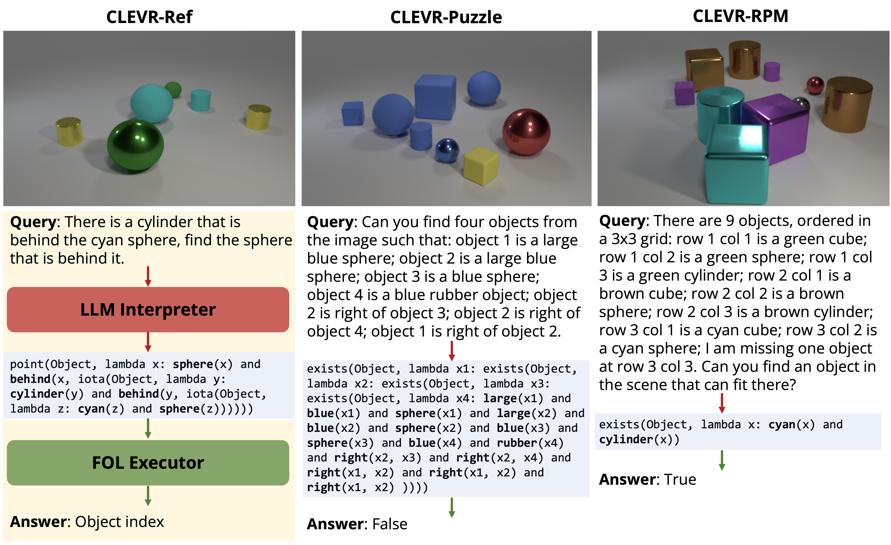
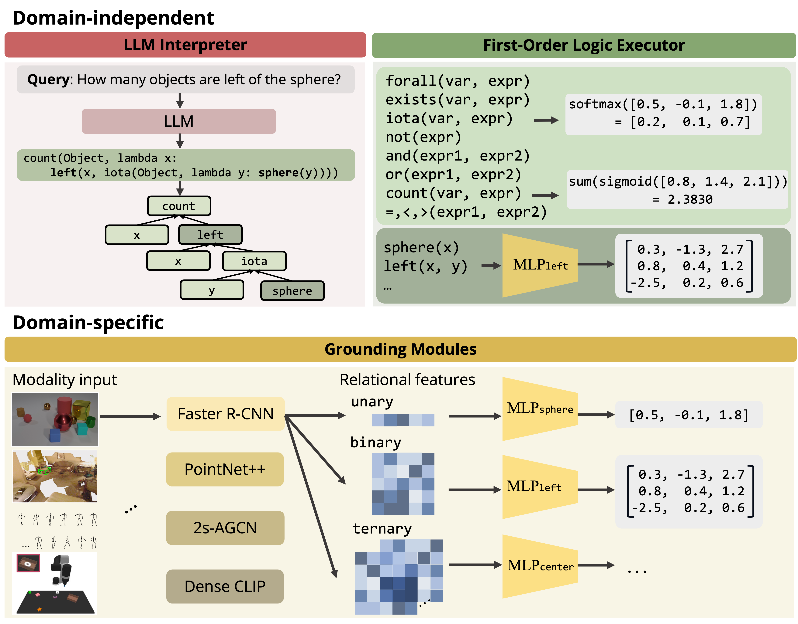

What’s Left? Concept Grounding with Logic-Enhanced Foundation Models
NeurIPS 2023
Abstract
Recent works such as VisProg and ViperGPT have smartly composed foundation models for visual reasoning—using large language models (LLMs) to produce programs that can be executed by pre-trained vision-language models. However, they operate in limited domains, such as 2D images, not fully exploiting the generalization of language: abstract concepts like "left" can also be grounded in 3D, temporal, and action data, as in moving to your left. This limited generalization stems from these inference-only methods’ inability to learn or adapt pre-trained models to a new domain. We propose the Logic-Enhanced FoundaTion Model (LEFT), a unified framework that learns to ground and reason with concepts across domains with a differentiable, domain-independent, first-order logic-based program executor. LEFT has an LLM interpreter that outputs a program represented in a general, logic-based reasoning language, which is shared across all domains and tasks. LEFT’s executor then executes the program with trainable domain-specific grounding modules. We show that LEFT flexibly learns concepts in four domains: 2D images, 3D scenes, human motions, and robotic manipulation. It exhibits strong reasoning ability in a wide variety of tasks, including those that are complex and not seen during training, and can be easily applied to new domains.
Execution across domains
LEFT is the Logic-Enhanced Foundation Model, a unified framework that conducts concept learning and reasoning across different domains and tasks. It integrates LLMs with differentiable logic modules, and modular neural networks for grounding concepts in each modality. Importantly, LEFT requires no predefined domain-specific language, and instead leverages LLMs to propose both reasoning trace and the visual grounding modules to automatically initialize from the input language query.
Below, we show execution traces of LEFT in the 2D, 3D, temporal, and robotic manipulation domains. LEFT executes each program, generated by LLMs, with domain-independent first-order logic modules and learnable domain-specific grounding modules (in colored text). The LEFT framework can be trained on different domains with the same general decomposition. Concepts in language serve as abstractions that enable such generalization.
Reasoning across tasks
LEFT can zero-shot transfer to novel visual reasoning tasks with LLM generated first-order logic, and effectively reuse learned concept embeddings, enabling flexible generalization. Our model performs well on challenging tasks which require the LLM interpreter to reason about patterns described by language. While the prompts given to the LLM are simple, the LLM interpreter can generalize to more complex tasks.

Logic-Enhanced Foundation Model
LEFT consists of three main components.
1. The first is a domain-independent LLM language interpreter, which generates the first-order logic queries to the execution engine.
2. The second is a domain-independent first-order logic executor, which executes logic programs in a differentiable way on all types of entities.
3. The third is the domain-specific grounding modules, which consist of encoders for each modality that extract entity-centric and relational features, as well as the corresponding concept embeddings parameterized as modular neural networks.
The LLM language interpreter reasons about the language instructions and generates programs for the task. LEFT then executes the program with the first-order logic executor and the trainable concept grounding modules. Notably, LEFT's executor and grounding modules are fully differentiable, which allows LEFT to learn from data.

Code release
Logic-Enhanced Foundation Model combines the strengths of foundation model reasoning and neuro-symbolic concept learning, to enable LLMs to learn new concepts and reason in visual domains without any predefined domain-specific implementations. LEFT can be viewed as a generalized framework of notable works such as VisProg and ViperGPT; in domains where pre-trained models are available and training is not required (e.g., 2D images), LEFT can similarly be used inference-only.
We release code and a colab notebook to show how to train LEFT on a new dataset in ~100 lines of code. Thanks!